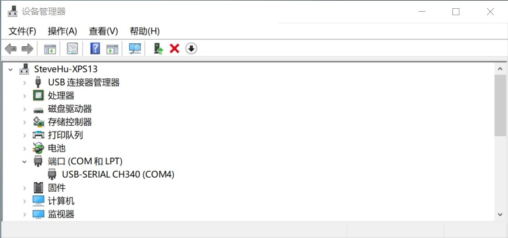
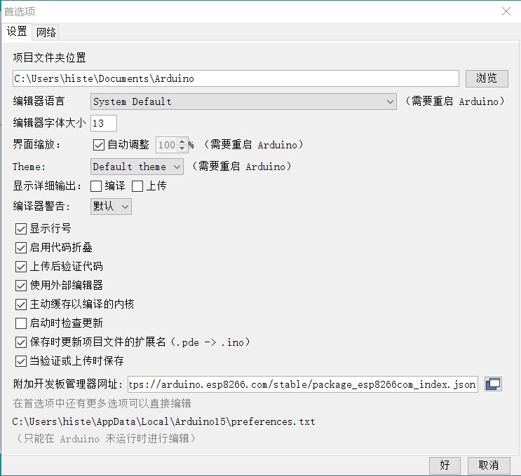
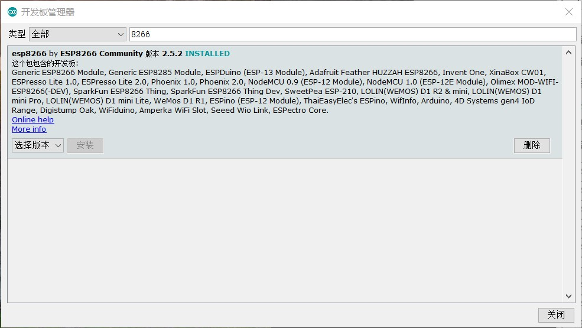
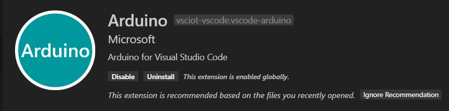
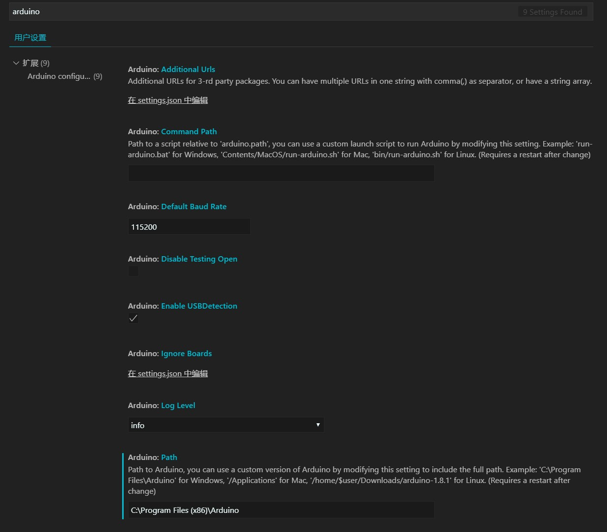
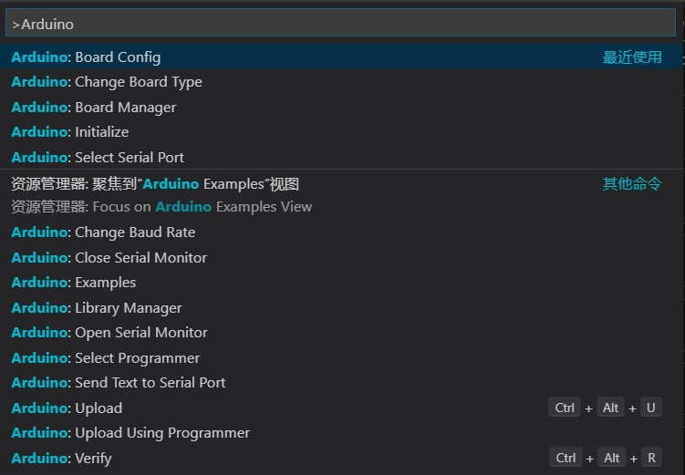
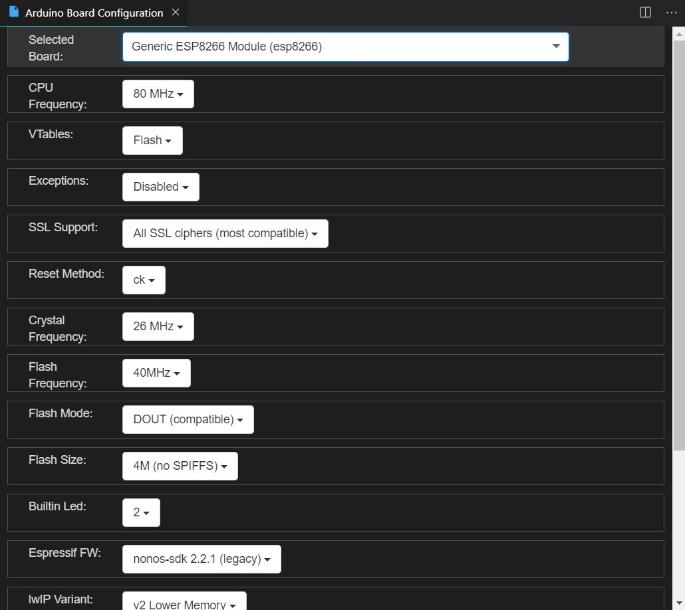
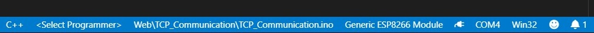
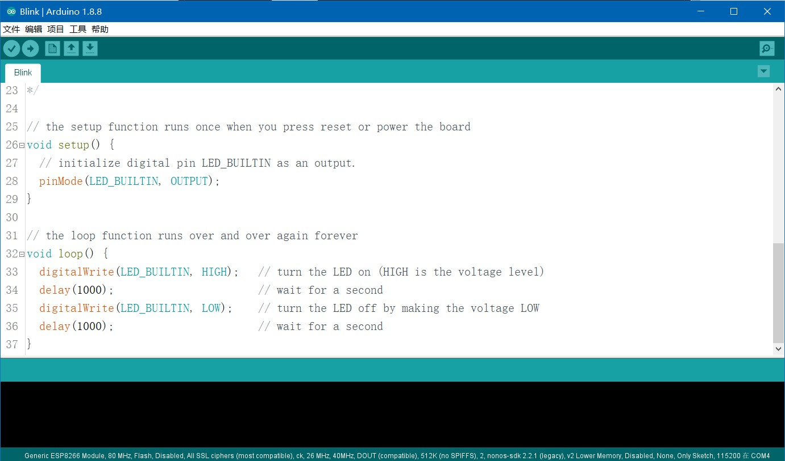

<!DOCTYPE html>
<html>
<head><meta name="generator" content="Hexo 3.8.0">
  <meta charset="utf-8">

  <!-- PACE Progress Bar START -->

  
  <title>esp8266:基本配置 | HiSteveHu</title>
  <meta name="viewport" content="width=device-width, initial-scale=1, maximum-scale=1">
  
    <meta name="keywords" content="histevehu,stevehu,blog">
  
  
  
  
  <meta name="description" content="这里我们将以 Adruino+ESP8266+VSCode配置 为例，展示ESP8266的入门基础配置，并实现最基本的点灯">
<meta name="keywords" content="教程">
<meta property="og:type" content="article">
<meta property="og:title" content="ESP8266:基本配置">
<meta property="og:url" content="https://histevehu.com/passages/ESP8266-BasicConfiguration/index.html">
<meta property="og:site_name" content="HiSteveHu">
<meta property="og:description" content="这里我们将以 Adruino+ESP8266+VSCode配置 为例，展示ESP8266的入门基础配置，并实现最基本的点灯">
<meta property="og:locale" content="en">
<meta property="og:image" content="https://histevehu.com/passages/ESP8266-BasicConfiguration/7.jpg">
<meta property="og:image" content="https://histevehu.com/passages/ESP8266-BasicConfiguration/0.jpg">
<meta property="og:image" content="https://histevehu.com/passages/ESP8266-BasicConfiguration/1.jpg">
<meta property="og:image" content="https://histevehu.com/passages/ESP8266-BasicConfiguration/2.jpg">
<meta property="og:image" content="https://histevehu.com/passages/ESP8266-BasicConfiguration/3.jpg">
<meta property="og:image" content="https://histevehu.com/passages/ESP8266-BasicConfiguration/4.jpg">
<meta property="og:image" content="https://histevehu.com/passages/ESP8266-BasicConfiguration/5.jpg">
<meta property="og:image" content="https://histevehu.com/passages/ESP8266-BasicConfiguration/6.jpg">
<meta property="og:image" content="https://histevehu.com/passages/ESP8266-BasicConfiguration/8.jpg">
<meta property="og:updated_time" content="2020-01-19T11:30:01.680Z">
<meta name="twitter:card" content="summary">
<meta name="twitter:title" content="ESP8266:基本配置">
<meta name="twitter:description" content="这里我们将以 Adruino+ESP8266+VSCode配置 为例，展示ESP8266的入门基础配置，并实现最基本的点灯">
<meta name="twitter:image" content="https://histevehu.com/passages/ESP8266-BasicConfiguration/7.jpg">
  
  <link rel="icon" href="/logo-1.ico">
  
    <link href="//fonts.googleapis.com/css?family=Source+Code+Pro" rel="stylesheet" type="text/css">
  
  <link href="https://fonts.googleapis.com/css?family=Open+Sans|Montserrat:700" rel="stylesheet" type="text/css">
  <link href="https://fonts.googleapis.com/css?family=Roboto:400,300,300italic,400italic" rel="stylesheet" type="text/css">
  <link href="https://cdn.bootcss.com/font-awesome/4.6.3/css/font-awesome.min.css" rel="stylesheet">
  <style type="text/css">
    @font-face{font-family:futura-pt;src:url(https://use.typekit.net/af/9749f0/00000000000000000001008f/27/l?subset_id=2&fvd=n5) format("woff2");font-weight:500;font-style:normal;}
    @font-face{font-family:futura-pt;src:url(https://use.typekit.net/af/90cf9f/000000000000000000010091/27/l?subset_id=2&fvd=n7) format("woff2");font-weight:500;font-style:normal;}
    @font-face{font-family:futura-pt;src:url(https://use.typekit.net/af/8a5494/000000000000000000013365/27/l?subset_id=2&fvd=n4) format("woff2");font-weight:lighter;font-style:normal;}
    @font-face{font-family:futura-pt;src:url(https://use.typekit.net/af/d337d8/000000000000000000010095/27/l?subset_id=2&fvd=i4) format("woff2");font-weight:400;font-style:italic;}</style>
    
  <link rel="stylesheet" id="athemes-headings-fonts-css" href="//fonts.googleapis.com/css?family=Yanone+Kaffeesatz%3A200%2C300%2C400%2C700&amp;ver=4.6.1" type="text/css" media="all">
  <link rel="stylesheet" href="/css/style.css">

  <script src="https://code.jquery.com/jquery-3.1.1.min.js"></script>

  <!-- Bootstrap core CSS -->
  <link rel="stylesheet" href="https://netdna.bootstrapcdn.com/bootstrap/3.0.2/css/bootstrap.min.css">
  <link rel="stylesheet" href="/css/hiero.css">
  <link rel="stylesheet" href="/css/glyphs.css">
  

  <!-- Custom CSS -->
  <link rel="stylesheet" href="/css/my.css">
  <!-- Google Adsense -->
  
  <script async src="//pagead2.googlesyndication.com/pagead/js/adsbygoogle.js"></script>
  <script>
      (adsbygoogle = window.adsbygoogle || []).push({
          google_ad_client: "",
          enable_page_level_ads: true
      });
  </script>
  
</head>
</html>
<script>
var themeMenus = {};

  themeMenus["/"] = "Home"; 

  themeMenus["/archives"] = "Archives"; 

  themeMenus["/categories"] = "Categories"; 

  themeMenus["/tags"] = "Tags"; 

  themeMenus["/about"] = "About"; 

</script>


  <body data-spy="scroll" data-target="#toc" data-offset="50">


  <header id="allheader" class="site-header" role="banner">
  <div class="clearfix container">
      <div class="site-branding">

          <h1 class="site-title">
            
              <a href="/" title="HiSteveHu" rel="home"> HiSteveHu </a>
            
          </h1>

          
            <div class="site-description">SteveHu&#39;s Personal Official Website</div>
          
            
          <nav id="main-navigation" class="main-navigation" role="navigation">
            <a class="nav-open">Menu</a>
            <a class="nav-close">Close</a>
            <div class="clearfix sf-menu">

              <ul id="main-nav" class="nmenu sf-js-enabled">
                    
                      <li class="menu-item menu-item-type-custom menu-item-object-custom menu-item-home menu-item-1663"> <a class="" href="/">Home</a> </li>
                    
                      <li class="menu-item menu-item-type-custom menu-item-object-custom menu-item-home menu-item-1663"> <a class="" href="/archives">Archives</a> </li>
                    
                      <li class="menu-item menu-item-type-custom menu-item-object-custom menu-item-home menu-item-1663"> <a class="" href="/categories">Categories</a> </li>
                    
                      <li class="menu-item menu-item-type-custom menu-item-object-custom menu-item-home menu-item-1663"> <a class="" href="/tags">Tags</a> </li>
                    
                      <li class="menu-item menu-item-type-custom menu-item-object-custom menu-item-home menu-item-1663"> <a class="" href="/about">About</a> </li>
                    
              </ul>
            </div>
          </nav>


      </div>
  </div>
</header>


  <div id="container">
    <div id="wrap">
            
      <div id="content" class="outer">
        
          <section id="main" style="float:none;"><article id="post-ESP8266-BasicConfiguration" style="width: 66%; float:left;" class="article article-type-post" itemscope="" itemprop="blogPost">
  <div id="articleInner" class="clearfix post-1016 post type-post status-publish format-standard has-post-thumbnail hentry category-template-2 category-uncategorized tag-codex tag-edge-case tag-featured-image tag-image tag-template">
    
    
      <header class="article-header">
        

<h1 class="thumb" itemprop="name">
  ESP8266:基本配置
</h1>


      </header>
    
    <div class="article-meta">
      
	Posted on <a href="/passages/ESP8266-BasicConfiguration/" class="article-date">
	  <time datetime="2019-09-13T01:44:37.000Z" itemprop="datePublished">September 13, 2019</time>
	</a>

      
	<span id="busuanzi_container_page_pv">
	  本文总阅读量<span id="busuanzi_value_page_pv"></span>次
	</span>

    </div>
    <div class="article-entry" itemprop="articleBody">
      
        <p>这里我们将以 <strong>Adruino+ESP8266+VSCode配置</strong> 为例，展示ESP8266的入门基础配置，并实现最基本的点灯</p>
<a id="more"></a>
<h3 id="准备"><a href="#准备" class="headerlink" title="准备"></a><strong>准备</strong></h3><blockquote>
<ul>
<li><p><strong>Adruino IDE</strong></p>
<p><a href="https://www.arduino.cc/en/Main/Software" target="_blank" rel="noopener">https://www.arduino.cc/en/Main/Software</a></p>
</li>
<li><p><strong>CH341驱动程序</strong></p>
<p><a href="http://www.wch.cn/download/CH341SER_EXE.html" target="_blank" rel="noopener">http://www.wch.cn/download/CH341SER_EXE.html</a></p>
</li>
<li><p><strong>ESP8266 开发板</strong></p>
<p>（参考购买链接）</p>
<p><a href="https://store.arduino.cc/usa/" target="_blank" rel="noopener">https://store.arduino.cc/usa/</a></p>
<p><a href="https://www.espressif.com/zh-hans/products/hardware/esp8266ex/overview" target="_blank" rel="noopener">https://www.espressif.com/zh-hans/products/hardware/esp8266ex/overview</a></p>
<p><a href="https://item.taobao.com/item.htm?_u=d35edijr38fd&amp;id=531755241333" target="_blank" rel="noopener">https://item.taobao.com/item.htm?_u=d35edijr38fd&amp;id=531755241333</a></p>
</li>
<li><p><strong>一根可靠的 Micro-USB 数据线</strong></p>
<p>注意线缆是具备数据传输功能的数据线，而非Micro-USB 接口的电源线，否则无法被计算机识别</p>
</li>
</ul>
</blockquote>
<blockquote>
<p><strong>若位于中国，则另需VPN以顺利完成配置</strong></p>
</blockquote>
<h3 id="配置"><a href="#配置" class="headerlink" title="配置"></a><strong>配置</strong></h3><ul>
<li><h4 id="CH341驱动程序"><a href="#CH341驱动程序" class="headerlink" title="CH341驱动程序"></a>CH341驱动程序</h4><p>打开驱动程序安装文件，安装，出现预安装成功提示后，将ESP8266与计算机连接。</p>
<p><strong>(注意：线缆是具备数据传输功能的数据线，而非Micro-USB 接口的电源线，否则无法被计算机识别）</strong></p>
<p>计算机将识别ESP8266并完成剩余安装。</p>
<p>验证驱动程序是否成功安装？可将ESP8266与电脑连接后，可通过：<strong>计算机-右键-属性-设备管理器</strong>，若在其中存在端口一项，其中包含CH340一项，则代表安装成功。</p>
<p></p>
</li>
<li><h4 id="Adruino-IDE"><a href="#Adruino-IDE" class="headerlink" title="Adruino IDE"></a><strong>Adruino IDE</strong></h4><ol>
<li><p>下载，安装</p>
</li>
<li><p>打开Adruino,点击“文件-首选项”，在附加开发板管理器网址中添加：</p>
<p><a href="https://arduino.esp8266.com/stable/package_esp8266com_index.json" target="_blank" rel="noopener">https://arduino.esp8266.com/stable/package_esp8266com_index.json</a></p>
<p></p>
</li>
<li><p>点击“工具-开发板-开发板管理器”，搜索”ESP8266”,安装</p>
<p><strong><em>若位于中国，则建议挂载VPN以顺利完成此步</em></strong></p>
<p></p>
</li>
<li><p>点击“工具-开发板“，选择”Generic ESP8266 Module”，完成配置</p>
</li>
</ol>
</li>
<li><h4 id="启用第三方编辑器（可选）"><a href="#启用第三方编辑器（可选）" class="headerlink" title="启用第三方编辑器（可选）"></a><strong><em>启用第三方编辑器（可选）</em></strong></h4><p>我们可以使用第三方更为强大的编辑器来替换Adruino内置编辑器，下面以VSCode为例，介绍对其基本配置：</p>
<ol>
<li><p>搜索插件”Arduino”，安装</p>
<p></p>
</li>
<li><p>打开设置，搜索”Arduino”，更改”Arduino:Path“ 一项为Arduino安装根目录（eg:默认为 <code>C:\Program Files (x86)\Arduino</code>），其他保持默认</p>
<p></p>
</li>
<li><p><strong>Ctrl+Shift+P</strong>,在命令端口输入 <strong>Arduino</strong>，选择 <strong>Arduino:Board Config</strong></p>
<p></p>
</li>
<li><p>在出现的配置窗口，将开发板类型更改为 <strong>Generic ESP8266 Module(esp8266)</strong>，其他保持默认即可</p>
<p></p>
</li>
<li><p>可通过底端状态栏快速做出相应操作</p>
<p></p>
<p><em>从右往左，<strong>COM4 </strong>选项为端口选择，选择ESP8266连接所在的端口，也可检验见面CH340驱动程序是否成功安装；<strong>插座</strong>图标为串口监听开关；<strong>Generic ESP8266 Module </strong>为所选开发板型号</em></p>
</li>
</ol>
</li>
</ul>
<h3 id="Hello-World！-Blink！"><a href="#Hello-World！-Blink！" class="headerlink" title="Hello World！= Blink！"></a><strong>Hello World！= Blink！</strong></h3><p>完成上述步骤，让我们开始第一步——运行最简单的程序！</p>
<p>在编程语言的学习中，第一步往往是在屏幕上打印“Hello World！”，对于单片机学习而言，第一步相对应的就是点亮ESP8266上的LED灯。</p>
<ol>
<li><p>打开Arduino，点击菜单 <strong>文件-示例-Basics-Blink</strong>，我们选择其内置的示例代码快速开始</p>
<p></p>
</li>
<li><p>将ESP8266 连接至计算机，点击菜单 <strong>工具-端口</strong>，选择正确端口，同时确保开发板型号选择为 <strong>Generic ESP8266 Module</strong>  （原因及注意事项见最后<strong>”注意“</strong>一栏）</p>
</li>
<li><p>点击菜单栏下方一条图标栏中的 <strong>上传（右箭头）</strong>图标，将程序烧录至ESP8266</p>
</li>
<li><p>若成功，则可见ESP8266将自动重启，然后LED灯间歇闪烁</p>
</li>
<li><p>大功告成！</p>
</li>
</ol>
<h3 id="注意"><a href="#注意" class="headerlink" title="注意"></a><strong>注意</strong></h3><ol>
<li><p>上文提及注意开发板型号选择的原因，是因为若你选择前文 <strong>准备-ESP8266开发板</strong> 参考购买链接中第三个链接（<a href="https://item.taobao.com/item.htm?_u=d35edijr38fd&amp;id=531755241333）并购买了其**开发板+TFT液晶屏套装**，想要调用其自带库实现TFT屏幕显示功能，需要将开发板型号更改为" target="_blank" rel="noopener">https://item.taobao.com/item.htm?_u=d35edijr38fd&amp;id=531755241333）并购买了其**开发板+TFT液晶屏套装**，想要调用其自带库实现TFT屏幕显示功能，需要将开发板型号更改为</a> <strong>NodeMCU</strong> 并且<strong>LED灯将失效</strong>，<strong>显示屏与LED不可同时实现。</strong></p>
<p><strong>即选择：</strong></p>
<ul>
<li><strong>Generic ESP8266 Module，LED可用，TFT显示屏不可用</strong></li>
<li><strong>NodeMCU，LED灯不可用，TFT显示屏可用</strong></li>
</ul>
</li>
</ol>

      
    </div>
    <footer class="entry-meta entry-footer">
      
	<span class="ico-folder"></span>
    <a class="article-category-link" href="/categories/ESP8266/">ESP8266</a>

      
  <span class="ico-tags"></span>
  <ul class="article-tag-list"><li class="article-tag-list-item"><a class="article-tag-list-link" href="/tags/教程/">教程</a></li></ul>

      
            
      
    </footer>
  </div>
  
    
<nav id="article-nav">
  
    <a href="/passages/ESP8266-SmartConfig/" id="article-nav-newer" class="article-nav-link-wrap">
      <strong class="article-nav-caption">Newer</strong>
      <div class="article-nav-title">
        
          ESP8266：SmartConfig
        
      </div>
    </a>
  
  
    <a href="/passages/Algorithm-Search/" id="article-nav-older" class="article-nav-link-wrap">
      <strong class="article-nav-caption">Older</strong>
      <div class="article-nav-title">算法：查找（Java实现）</div>
    </a>
  
</nav>

  
</article>

<!-- Table of Contents -->

  <aside id="sidebar">
    <div id="toc" class="toc-article" style="overflow-y: scroll; max-width: 28%;">
    <strong class="toc-title">Contents</strong>
    
      <ol class="nav"><li class="nav-item nav-level-3"><a class="nav-link" href="#准备"><span class="nav-number">1.</span> <span class="nav-text">准备</span></a></li><li class="nav-item nav-level-3"><a class="nav-link" href="#配置"><span class="nav-number">2.</span> <span class="nav-text">配置</span></a><ol class="nav-child"><li class="nav-item nav-level-4"><a class="nav-link" href="#CH341驱动程序"><span class="nav-number">2.1.</span> <span class="nav-text">CH341驱动程序</span></a></li><li class="nav-item nav-level-4"><a class="nav-link" href="#Adruino-IDE"><span class="nav-number">2.2.</span> <span class="nav-text">Adruino IDE</span></a></li><li class="nav-item nav-level-4"><a class="nav-link" href="#启用第三方编辑器（可选）"><span class="nav-number">2.3.</span> <span class="nav-text">启用第三方编辑器（可选）</span></a></li></ol></li><li class="nav-item nav-level-3"><a class="nav-link" href="#Hello-World！-Blink！"><span class="nav-number">3.</span> <span class="nav-text">Hello World！= Blink！</span></a></li><li class="nav-item nav-level-3"><a class="nav-link" href="#注意"><span class="nav-number">4.</span> <span class="nav-text">注意</span></a></li></ol>
    
    </div>
  </aside>
</section>
        
      </div>
      <footer id="footer" class="site-footer">
  

  <div class="clearfix container">
      <div class="site-info">
	      &copy; 2020 HiSteveHu All Rights Reserved.
          
            <span id="busuanzi_container_site_uv">
              本站访客数<span id="busuanzi_value_site_uv"></span>人次  
              本站总访问量<span id="busuanzi_value_site_pv"></span>次
            </span>
          
      </div>
      <div class="site-credit">
            <a href="https://github.com/iTimeTraveler/hexo-theme-hiero" target="_blank">hiero</a>
      </div>
  </div>
</footer>


<!-- min height -->

<script>
    var contentdiv = document.getElementById("content");

    contentdiv.style.minHeight = document.body.offsetHeight - document.getElementById("allheader").offsetHeight - document.getElementById("footer").offsetHeight + "px";
</script>

<!-- Custome JS -->
<script src="/js/my.js"></script>
    </div>
    <!-- <nav id="mobile-nav">
  
    <a href="/" class="mobile-nav-link">Home</a>
  
    <a href="/archives" class="mobile-nav-link">Archives</a>
  
    <a href="/categories" class="mobile-nav-link">Categories</a>
  
    <a href="/tags" class="mobile-nav-link">Tags</a>
  
    <a href="/about" class="mobile-nav-link">About</a>
  
</nav> -->
    

<!-- mathjax config similar to math.stackexchange -->

<script type="text/x-mathjax-config">
  MathJax.Hub.Config({
    tex2jax: {
      inlineMath: [ ['$','$'], ["\\(","\\)"] ],
      processEscapes: true
    }
  });
</script>

<script type="text/x-mathjax-config">
    MathJax.Hub.Config({
      tex2jax: {
        skipTags: ['script', 'noscript', 'style', 'textarea', 'pre', 'code']
      }
    });
</script>

<script type="text/x-mathjax-config">
    MathJax.Hub.Queue(function() {
        var all = MathJax.Hub.getAllJax(), i;
        for(i=0; i < all.length; i += 1) {
            all[i].SourceElement().parentNode.className += ' has-jax';
        }
    });
</script>

<script type="text/javascript" src="https://cdnjs.cloudflare.com/ajax/libs/mathjax/2.7.4/MathJax.js?config=TeX-AMS-MML_HTMLorMML">
</script>


<script src="/js/scripts.js"></script>
<script src="https://stackpath.bootstrapcdn.com/bootstrap/3.3.7/js/bootstrap.min.js"></script>
<script src="/js/main.js"></script>


	<script async src="https://dnqof95d40fo6.cloudfront.net/atw7f8.js">
	</script>


  </div>

  <a id="rocket" href="#top" class=""></a>
  <script type="text/javascript" src="/js/totop.js" async=""></script>
</body>
</html>
